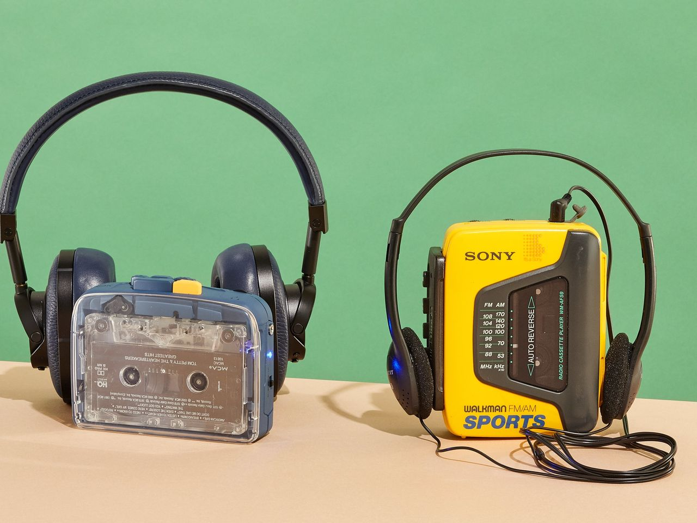
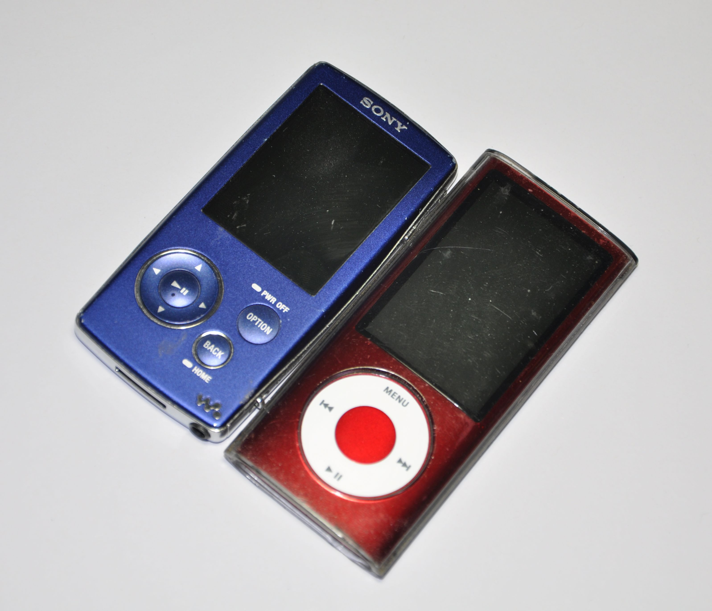
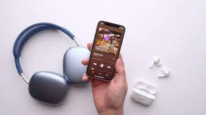

In the modern day, music can be more than just a consumer good or occasional live event, but the soundtrack to living through its convenience in one’s phone. Historically, music has been a live art, with the surrounding environments shaping the compositions that would pass through. Be it the swelling, and reverberating chords of organs in cathedrals, or tight drum rhythms outside in North Africa, music has always had a dynamic effect on lifestyle. That being said, up until this point I’ve focused my attention mainly on the visual and graphic parts of how music and art relate. Now taking a shift to the functionality of design in how it communicates a product, I’d like to briefly pick apart music listening in the mobile age.
A rough and overly simplified lineage of mobile music listening:



^ (Guest Spotify Interface)
Be it Spotify, Apple Music, Soundcloud, YouTube Music, or whatever streaming app you prefer. A modern smartphone’s functionality as a music player plays an inseparable role in most of our day-to-day lives. Today, 82.1 million Americans have some type of paid music streaming subscription, constituting roughly ¼ of the country. Especially now that it comprises roughly 84% of U.S. music industry revenue, streaming is a major force in the market. Having had YouTube around since I was a kid, the way I had learned to look for new videos and songs there transferred naturally to when I got a phone. Even being particularly interested in an mp3 player my friend brought to class in 5th grade, there’s something enticing about being able to soundtrack your life at any given point, regardless of location or situation. With the money behind music streaming making it a fiercely competitive industry, there is a constant race to improve design and innovate. Be it the Spatial Audio of Apple Music, the underground sensibilities of Soundcloud, or the unreleased access on YouTube Music, each app wants to carve out its own space while still keeping mass appeal. Custom tailored to what a user may like, music streaming has become an accessible and vital part of modern life and media.